nion
nionMultiple Factors - HML updated with Risk adjustment
Multiple Factors - HML
HML is one of the simplest factors. Let's take a look.
Contents
Load Data
Let's load the data from ..
load('../data_equity_list_us.mat'); load('../data_field_list.mat'); load('../data_historical_data_us.mat');
take data sample, load data & the list
index = datasample(1:1300,1000,'Replace',false);
px = fun_load_price(history_us, equity_list_us, index);
px = fun_clean_data(px);
list = equity_list_us(index,:);
load the PB ratios
pb_ts = fun_load_observations(history_us, equity_list_us, index,'pb');
I have looked at the medium PB previously
plot(pb_ts.dates,nanmedian(fts2mat(pb_ts),2));
datetick('x');
snapnow;
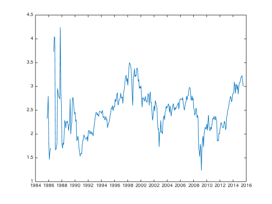 pb data is not available for most equty until late 80s.
let's take a look at the full dataset.
plot(pb_ts.dates,fts2mat(pb_ts));
datetick('x');
snapnow;
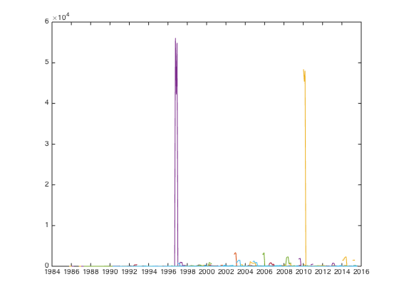 I can clean up the pb data for extreme value, but I prefer to leave it intact. Since we cleaned up price data, let's see what's the corresponding pb data looks like
pb_mat = fts2mat(pb_ts);
px_mat = fts2mat(px);
pb_mat(isnan(px_mat))=nan;
plot(pb_ts.dates,pb_mat);
datetick('x');
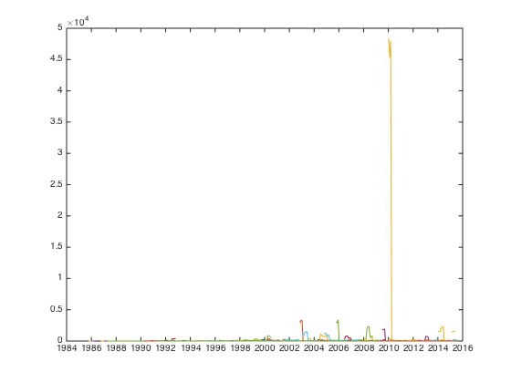 much better.
Check signal.
Does low valuation securites out perform on risk adjust basis? Let's compare portfolio constructed using only low pb stocks v.s. is equal weighted conterpart.
score_pb_ts = -fun_calculate_score(pb_ts,list,'fullsort',px); portfolio_weight_ts = fun_portfolio_weight_sector_neutral(score_pb_ts,'longonly'); portfolio_longonly_rt_ts = fun_portfolio_return(px, portfolio_weight_ts); portfolio_weight_ts = fun_portfolio_weight_sector_neutral(score_pb_ts,'equalweight'); portfolio_equalweight_rt_ts = fun_portfolio_return(px, portfolio_weight_ts);
let's check the result.
plot(cumsum(portfolio_longonly_rt_ts)); legend('off'); hold on; plot(cumsum(portfolio_equalweight_rt_ts)); legend('off'); hold off; snapnow; [sqrt(12)*sharpe(fts2mat(portfolio_longonly_rt_ts(50:end)),0) sqrt(12)*sharpe(fts2mat(portfolio_equalweight_rt_ts(50:end)),0)]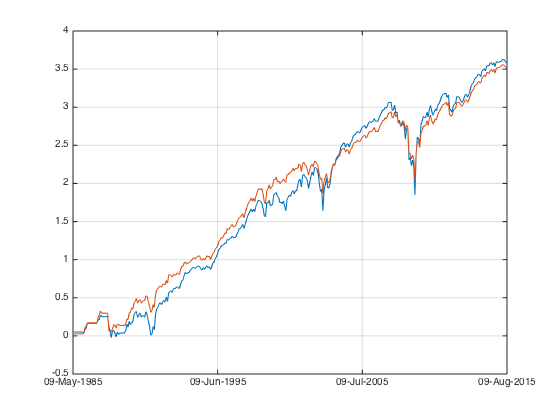
ans =
0.5195 0.6226
doesn't seems to be very promising.
let's take a look at the sector sorted portfolio
score_pb_ts = -fun_calculate_score(pb_ts,list,'sectorsort',px); portfolio_weight_ts = fun_portfolio_weight_sector_neutral(score_pb_ts,'longonly'); portfolio_longonly_rt_ts = fun_portfolio_return(px, portfolio_weight_ts); portfolio_weight_ts = fun_portfolio_weight_sector_neutral(score_pb_ts,'equalweight'); portfolio_equalweight_rt_ts = fun_portfolio_return(px, portfolio_weight_ts); % let's check the result. plot(cumsum(portfolio_longonly_rt_ts)); legend('off'); hold on; plot(cumsum(portfolio_equalweight_rt_ts)); legend('off'); hold off; snapnow; [sqrt(12)*sharpe(fts2mat(portfolio_longonly_rt_ts),0) sqrt(12)*sharpe(fts2mat(portfolio_equalweight_rt_ts),0)]

ans =
0.5481 0.6282
sector weight give me a more balance portfolio and improved the sharpe by 5 basis points. most of the outperformance came in after dotcom bubble.
HML is very different from MOM. even though the long only portfolio outperformed equal weighted portfolio, in terms of sharpe it is worse. The outperformance is gained by assuming more 'risk'.
There is a slightly tricky question here. what extra 'risk' is it? if it is market risk, then HML is useless. but if it is another type of risk different from market risk, then it might be useful from diversification point of view.
with this question in mind, let's check pure long short factor portfolio against equal weighted market portfolio.
score_pb_ts = -fun_calculate_score(pb_ts,list,'sectorsort',px); portfolio_weight_ts = fun_portfolio_weight_sector_neutral(score_pb_ts,'longshort'); portfolio_longshort_rt_ts = fun_portfolio_return(px, portfolio_weight_ts); portfolio_weight_ts = fun_portfolio_weight_sector_neutral(score_pb_ts,'equalweight'); portfolio_equalweight_rt_ts = fun_portfolio_return(px, portfolio_weight_ts); % let's check the result. plot(cumsum(portfolio_longshort_rt_ts)); legend('off'); hold on; plot(cumsum(portfolio_equalweight_rt_ts)); legend('off'); snapnow; [sqrt(12)*sharpe(fts2mat(portfolio_longshort_rt_ts),0) sqrt(12)*sharpe(fts2mat(portfolio_equalweight_rt_ts),0)]

ans =
0.0847 0.6282
if additional risk is mainly market risk, then long short portfolio should be highly correlated with equal weighted benchmark. let's check out the correlation:
corrcoef(fts2mat(portfolio_longshort_rt_ts(1:end)), fts2mat(portfolio_equalweight_rt_ts(1:end)))
ans =
1.0000 0.5116
0.5116 1.0000
the correlation is quite high... this is not what I expected, but let's accept the facts.
let's see how the top percentile securities do
portfolio_weight_ts = fun_portfolio_weight_sector_neutral(score_pb_ts,'topm',0.2); portfolio_topm_rt_ts = fun_portfolio_return(px, portfolio_weight_ts); portfolio_weight_ts = fun_portfolio_weight_sector_neutral(score_pb_ts,'topmlongonly',0.2); portfolio_topmlongonly_rt_ts = fun_portfolio_return(px, portfolio_weight_ts); % let's check the result. plot(cumsum(portfolio_topm_rt_ts)); legend('off'); plot(cumsum(portfolio_topmlongonly_rt_ts)); legend('off'); hold off; snapnow; [sqrt(12)*sharpe(fts2mat(portfolio_topm_rt_ts),0) sqrt(12)*sharpe(fts2mat(portfolio_longshort_rt_ts),0)] [sqrt(12)*sharpe(fts2mat(portfolio_topmlongonly_rt_ts),0) sqrt(12)*sharpe(fts2mat(portfolio_equalweight_rt_ts),0)]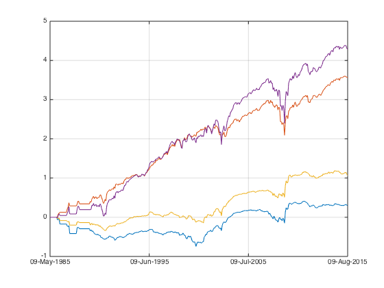
ans =
0.3179 0.0847
ans =
0.5387 0.6282
the drawdown is huge for top 20%, 63%(!) in 2008. 10% more than equal weighted index...
maxdrawdown(exp(fts2mat(cumsum(portfolio_topmlongonly_rt_ts)))) maxdrawdown(exp(fts2mat(cumsum(portfolio_equalweight_rt_ts))))
ans =
0.6837
ans =
0.5937
I can check my historical portfolio pb and compare that to the market median.
score_mat = fts2mat(score_pb_ts); pb_mat = fts2mat(pb_ts); pb_selected = pb_mat; pb_selected(score_mat<0.2)=nan; plot(pb_ts.dates,nanmedian(pb_mat,2)); hold on; plot(pb_ts.dates,nanmedian(pb_selected,2)); hold off; datetick('x'); snapnow;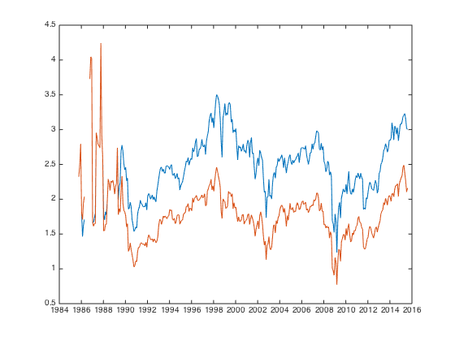
Percentile analysis
let's take a look at the relationship with N
i=1; while i<=10 portfolio_weight_ts = fun_portfolio_weight_sector_neutral(score_pb_ts,'topm',0.1*i); portfolio_topm_rt_ts = fun_portfolio_return(px, portfolio_weight_ts); portplot = plot(fts2mat(cumsum(portfolio_topm_rt_ts))); portplot.Color(4) = 1 - 0.1*i; hold on; sharpe_top(i) = sqrt(12)*sharpe(fts2mat(portfolio_topm_rt_ts),0); i = i+1; end hold off; snapnow;

let's take a look at each percentile
i=1; while i<=10 portfolio_weight_ts = fun_portfolio_weight_sector_neutral(score_pb_ts,'topmn',0.1*i,0.1*(i-1)); portfolio_topm_rt_ts = fun_portfolio_return(px, portfolio_weight_ts); portplot = plot(fts2mat(cumsum(portfolio_topm_rt_ts))); portplot.Color(4) = 1 - 0.1*i; hold on; sharpe_top_percentile(i) = sqrt(12)*sharpe(fts2mat(portfolio_topm_rt_ts),0); i = i+1; end hold off; snapnow;

zoom in
i=1; while i<=10 portfolio_weight_ts = fun_portfolio_weight_sector_neutral(score_pb_ts,'topmn',0.01*i,0.01*(i-1)); portfolio_topm_rt_ts = fun_portfolio_return(px, portfolio_weight_ts); portplot = plot(fts2mat(cumsum(portfolio_topm_rt_ts))); portplot.Color(4) = 1 - 0.1*i; hold on; sharpe_top_percentile_zoom(i) = sqrt(12)*sharpe(fts2mat(portfolio_topm_rt_ts),0); i = i+1; end hold off; snapnow;

signal strength
plot(sharpe_top); hold on; plot(sharpe_top_percentile); plot(sharpe_top_percentile_zoom); hold off;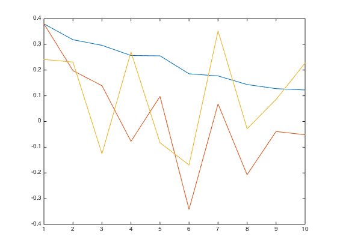
Update the result with risk adjustment
let's generate the benchmark first
portfolio_weight_eq_weight_ts = fun_portfolio_weight_sector_neutral(score_pb_ts,'equalweight'); portfolio_rt_ts = fun_portfolio_return(px, portfolio_weight_eq_weight_ts); benchmark = [100; 100*exp(fts2mat(cumsum(portfolio_rt_ts)))]; benchmark_ts = fints(px.dates, benchmark,'EqualWeightIndex'); portfolio_weight_ts = fun_portfolio_weight_sector_neutral(score_pb_ts,'topmlongonly',0.1); portfolio_cap_ts = fun_sequential_backtest_autoadjust(100, px(50:end), benchmark_ts(50:end), portfolio_weight_ts(50:end),true); plot(log(benchmark_ts)); legend('off'); hold on; plot(log(portfolio_cap_ts)); legend('off'); snapnow;

sharpe & vol
[sqrt(12)*sharpe(fts2mat(tick2ret(portfolio_cap_ts)),0) sqrt(12)*sharpe(fts2mat(tick2ret(benchmark_ts)),0)] [sqrt(12)*std(fts2mat(tick2ret(portfolio_cap_ts))) sqrt(12)*std(fts2mat(tick2ret(benchmark_ts)))]
ans =
0.7043 0.7193
ans =
0.3098 0.1891
let's take a look at the risk adjusted v.s. the capital hedged.
portfolio_cap_factor_1_ts = fun_sequential_backtest_autoadjust(100, px(50:end), benchmark_ts(50:end), portfolio_weight_ts(50:end),false); portfolio_cap_factor_2_ts = fun_sequential_backtest_partial(100, px(50:end), benchmark_ts(50:end),1, portfolio_weight_ts(50:end),false); plot(log(portfolio_cap_factor_1_ts)); legend('off'); plot(log(portfolio_cap_factor_2_ts)); legend('off'); snapnow; hold off;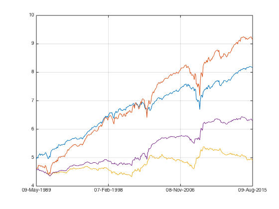
sharpe & correlation
[sqrt(12)*sharpe(fts2mat(tick2ret(portfolio_cap_factor_1_ts)),0) sqrt(12)*sharpe(fts2mat(tick2ret(portfolio_cap_factor_2_ts)),0)] corrcoef(fts2mat(tick2ret(portfolio_cap_factor_1_ts)),fts2mat(tick2ret(benchmark_ts(50:end)))) corrcoef(fts2mat(tick2ret(portfolio_cap_factor_2_ts)),fts2mat(tick2ret(benchmark_ts(50:end))))
ans =
0.1507 0.4972
ans =
1.0000 -0.0314
-0.0314 1.0000
ans =
1.0000 0.5626
0.5626 1.0000
so there is in fact no signal in top 0.1 ... on risk adjusted basis.
let's run the percentile analysis.
top N
i=1; while i<=10 portfolio_weight_ts = fun_portfolio_weight_sector_neutral(score_pb_ts,'topmlongonly',0.1*i); portfolio_cap_ts = fun_sequential_backtest_autoadjust(100, px(50:end), benchmark_ts(50:end), portfolio_weight_ts(50:end),false); portplot = plot(log(portfolio_cap_ts)); portplot.Color(4) = 1 - 0.1*i; hold on; sharpe_percentile(i) = sqrt(12)*sharpe(fts2mat(tick2ret(portfolio_cap_ts)),0); corr = corrcoef(fts2mat(tick2ret(portfolio_cap_ts)), fts2mat(tick2ret(benchmark_ts(50:end)))); correlation(i) = corr(1,2); i = i+1; end hold off; snapnow; plot(sharpe_percentile) snapnow; plot(correlation) snapnow;


it now looks very different from the unadjusted result.
breakdown into percentile.
i=1; while i<=10 portfolio_weight_ts = fun_portfolio_weight_sector_neutral(score_pb_ts,'topmnlongonly',0.1*i,0.1*(i-1)); portfolio_cap_ts = fun_sequential_backtest_autoadjust(100, px(50:end), benchmark_ts(50:end), portfolio_weight_ts(50:end),false); portplot = plot(log(portfolio_cap_ts)); portplot.Color(4) = 1 - 0.1*i; hold on; sharpe_percentile(i) = sqrt(12)*sharpe(fts2mat(tick2ret(portfolio_cap_ts)),0); corr = corrcoef(fts2mat(tick2ret(portfolio_cap_ts)), fts2mat(tick2ret(benchmark_ts(50:end)))); correlation(i) = corr(1,2); i = i+1; end hold off; snapnow; plot(sharpe_percentile) snapnow; plot(correlation) snapnow;
 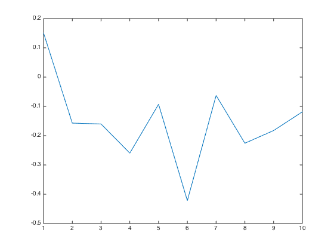 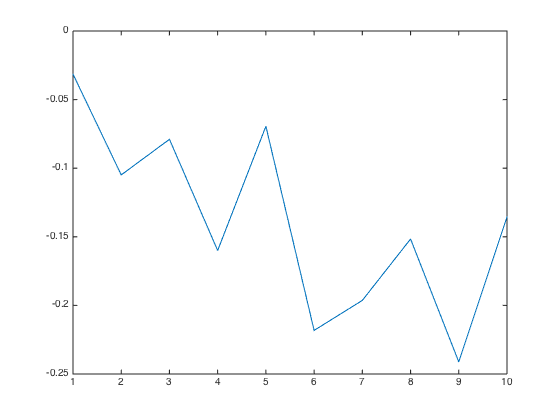
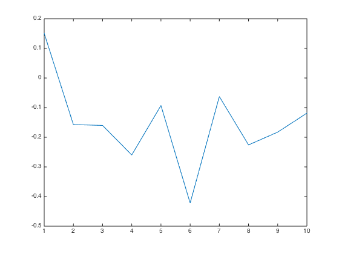 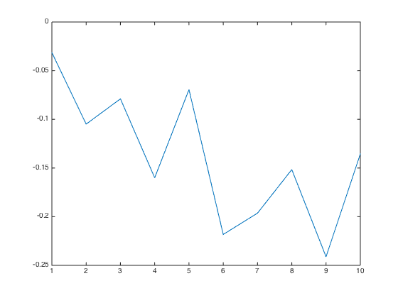 so if there is no positive drift on risk adjusted basis, then what's the point to include HML in the portfolio? as diversifier and a timing signal?
Large dataset test
load the big dataset
load('../Big Data/data_equity_list.mat'); load('../Big Data/data_historical_data_jan16.mat'); equity_list = equity_list(1:size(storage0,1),:); equity_list_us_large = equity_list(strcmp(equity_list(:,2),'US'),:); history_us_large = storage0(strcmp(equity_list(:,2),'US'),:); clear storage0; clear equity_list; equity_list_us_large = equity_list_us_large(not(cellfun(@isempty,history_us_large(:,1))),:); history_us_large = history_us_large(not(cellfun(@isempty,history_us_large(:,1))),:);
take data sample, load data & the list
index_large = datasample(1:8900,8001,'Replace',false);
px_large = fun_load_price_large(history_us_large, equity_list_us_large, index_large);
px_large = fun_clean_data(px_large);
list_large = equity_list_us_large(index_large,:);
load the PB ratios
pb_ts_large = fun_load_observations_large(history_us_large, equity_list_us_large, index_large,'pb');
calculate score
score_pb_ts_large = -fun_calculate_score(pb_ts_large,list_large,'sectorsort',px_large);
compare the result:
pure long short
portfolio_weight_ts = fun_portfolio_weight_sector_neutral(score_pb_ts_large,'longshort'); portfolio_rt_ts = fun_portfolio_return(px_large, portfolio_weight_ts); plot(cumsum(portfolio_rt_ts)); legend('off') hold on; portfolio_weight_ts = fun_portfolio_weight_sector_neutral(score_pb_ts,'longshort'); portfolio_rt_ts = fun_portfolio_return(px, portfolio_weight_ts); plot(cumsum(portfolio_rt_ts)); legend('off') hold off;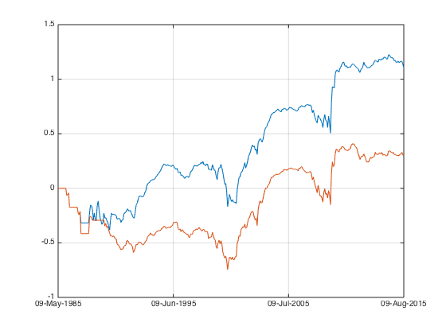
pure top 10%
portfolio_weight_ts = fun_portfolio_weight_sector_neutral(score_pb_ts_large,'topm',0.1); portfolio_rt_ts = fun_portfolio_return(px_large, portfolio_weight_ts); plot(cumsum(portfolio_rt_ts)); legend('off') hold on; sqrt(12)*sharpe(fts2mat(portfolio_rt_ts),0) portfolio_weight_ts = fun_portfolio_weight_sector_neutral(score_pb_ts_large,'topmn',0.1,0.02); portfolio_rt_ts = fun_portfolio_return(px_large, portfolio_weight_ts); plot(cumsum(portfolio_rt_ts)); legend('off') sqrt(12)*sharpe(fts2mat(portfolio_rt_ts),0) portfolio_weight_ts = fun_portfolio_weight_sector_neutral(score_pb_ts,'topm',0.1); portfolio_rt_ts = fun_portfolio_return(px, portfolio_weight_ts); plot(cumsum(portfolio_rt_ts)); legend('off') hold off; sqrt(12)*sharpe(fts2mat(portfolio_rt_ts),0)
ans =
0.5129
ans =
0.5663
ans =
0.3796
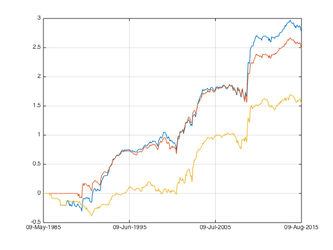 each percentile
i=1; while i<=10 portfolio_weight_ts = fun_portfolio_weight_sector_neutral(score_pb_ts_large,'topmn',0.1*i,0.1*(i-1)); portfolio_topm_rt_ts = fun_portfolio_return(px_large, portfolio_weight_ts); portplot = plot(fts2mat(cumsum(portfolio_topm_rt_ts))); portplot.Color(4) = 1 - 0.1*i; hold on; sharpe_top_percentile_large(i) = sqrt(12)*sharpe(fts2mat(portfolio_topm_rt_ts),0); i = i+1; end hold off; snapnow; plot(sharpe_top_percentile_large); snapnow;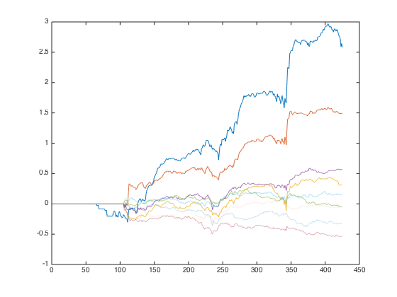 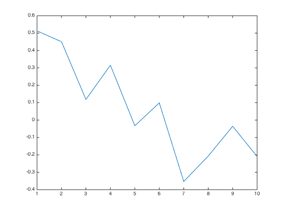
zoom into first 800
i=1; while i<=10 portfolio_weight_ts = fun_portfolio_weight_sector_neutral(score_pb_ts_large,'topmn',0.01*i,0.01*(i-1)); portfolio_topm_rt_ts = fun_portfolio_return(px_large, portfolio_weight_ts); portplot = plot(fts2mat(cumsum(portfolio_topm_rt_ts))); portplot.Color(4) = 1 - 0.1*i; hold on; sharpe_top_percentile_large_zoom(i) = sqrt(12)*sharpe(fts2mat(portfolio_topm_rt_ts),0); i = i+1; end hold off; snapnow; plot(sharpe_top_percentile_large_zoom); snapnow;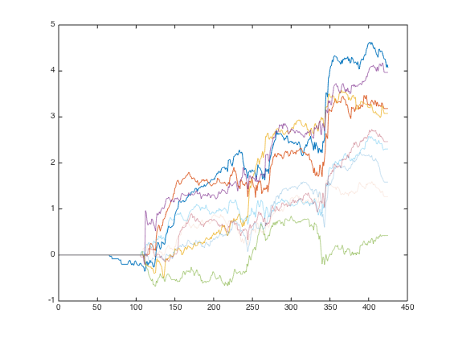 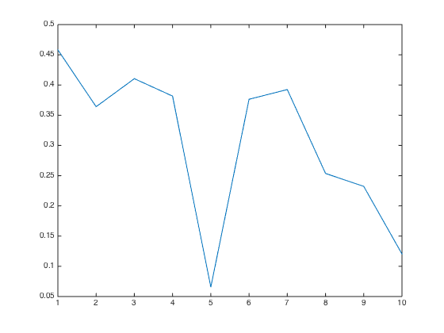
>>>>similar to MOM, larger dataset doesn't really improve the factor<<<<< This is wrong due to a mistake in generating scores.. larger dataset helps!!
Update large dataset result with risk adjustment
let's generate the benchmark first
portfolio_weight_eq_weight_ts = fun_portfolio_weight_sector_neutral(score_pb_ts_large,'equalweight'); portfolio_rt_ts = fun_portfolio_return(px_large, portfolio_weight_eq_weight_ts); benchmark_large = [100; 100*exp(fts2mat(cumsum(portfolio_rt_ts)))]; benchmark_ts_large = fints(px_large.dates, benchmark_large,'EqualWeightIndex');
let's compare the two benchmark.
plot(log(benchmark_ts)); legend('off'); hold on; plot(log(benchmark_ts_large)); legend('off'); hold off; snapnow; portfolio_weight_ts = fun_portfolio_weight_sector_neutral(score_pb_ts_large,'topmlongonly',0.1); portfolio_cap_ts = fun_sequential_backtest_autoadjust(100, px_large(50:end), benchmark_ts_large(50:end), portfolio_weight_ts(50:end),true); plot(log(benchmark_ts_large)); legend('off'); hold on; plot(log(portfolio_cap_ts)); legend('off'); snapnow;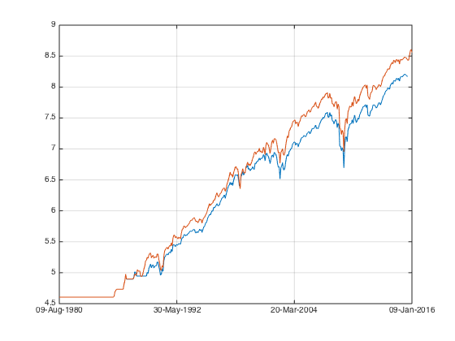 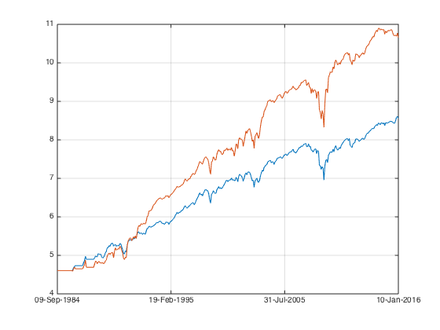
sharpe & vol
[sqrt(12)*sharpe(fts2mat(tick2ret(portfolio_cap_ts)),0) sqrt(12)*sharpe(fts2mat(tick2ret(benchmark_ts)),0)] [sqrt(12)*std(fts2mat(tick2ret(portfolio_cap_ts))) sqrt(12)*std(fts2mat(tick2ret(benchmark_ts)))]
ans =
0.7441 0.7193
ans =
0.3265 0.1891
let's take a look at the risk adjusted v.s. the capital hedged.
portfolio_cap_factor_1_ts = fun_sequential_backtest_autoadjust(100, px_large(50:end), benchmark_ts_large(50:end), portfolio_weight_ts(50:end),false); portfolio_cap_factor_2_ts = fun_sequential_backtest_partial(100, px_large(50:end), benchmark_ts_large(50:end),1, portfolio_weight_ts(50:end),false); plot(log(portfolio_cap_factor_1_ts)); legend('off'); plot(log(portfolio_cap_factor_2_ts)); legend('off'); snapnow; hold off;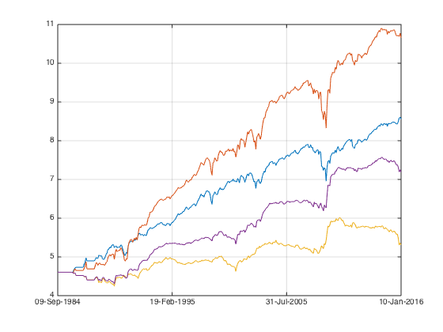
sharpe & correlation
[sqrt(12)*sharpe(fts2mat(tick2ret(portfolio_cap_factor_1_ts)),0) sqrt(12)*sharpe(fts2mat(tick2ret(portfolio_cap_factor_2_ts)),0)] corrcoef(fts2mat(tick2ret(portfolio_cap_factor_1_ts)),fts2mat(tick2ret(benchmark_ts_large(50:end)))) corrcoef(fts2mat(tick2ret(portfolio_cap_factor_2_ts)),fts2mat(tick2ret(benchmark_ts_large(50:end))))
ans =
0.2338 0.5873
ans =
1.0000 -0.0408
-0.0408 1.0000
ans =
1.0000 0.5623
0.5623 1.0000
large pool seems matters, we have some positive drift here..
let's run the percentile analysis.
top N
i=1; while i<=10 portfolio_weight_ts = fun_portfolio_weight_sector_neutral(score_pb_ts_large,'topmlongonly',0.1*i); portfolio_cap_ts = fun_sequential_backtest_autoadjust(100, px_large(50:end), benchmark_ts_large(50:end), portfolio_weight_ts(50:end),false); portplot = plot(log(portfolio_cap_ts)); portplot.Color(4) = 1 - 0.1*i; hold on; sharpe_percentile(i) = sqrt(12)*sharpe(fts2mat(tick2ret(portfolio_cap_ts)),0); corr = corrcoef(fts2mat(tick2ret(portfolio_cap_ts)), fts2mat(tick2ret(benchmark_ts_large(50:end)))); correlation(i) = corr(1,2); i = i+1; end hold off; snapnow; plot(sharpe_percentile) snapnow; plot(correlation) snapnow;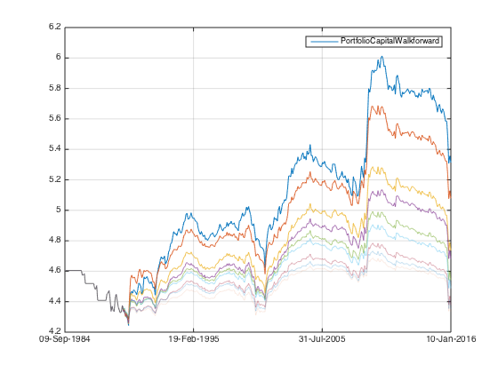 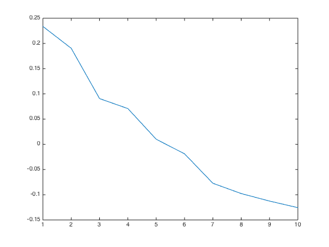 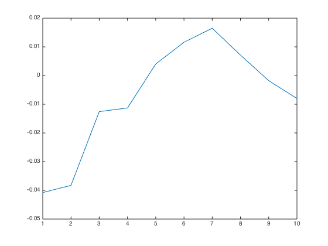
it now looks very different from the unadjusted result.
breakdown into percentile.
i=1; while i<=10 portfolio_weight_ts = fun_portfolio_weight_sector_neutral(score_pb_ts,'topmnlongonly',0.1*i,0.1*(i-1)); portfolio_cap_ts = fun_sequential_backtest_autoadjust(100, px(50:end), benchmark_ts(50:end), portfolio_weight_ts(50:end),false); portplot = plot(log(portfolio_cap_ts)); portplot.Color(4) = 1 - 0.1*i; hold on; sharpe_percentile(i) = sqrt(12)*sharpe(fts2mat(tick2ret(portfolio_cap_ts)),0); corr = corrcoef(fts2mat(tick2ret(portfolio_cap_ts)), fts2mat(tick2ret(benchmark_ts(50:end)))); correlation(i) = corr(1,2); i = i+1; end hold off; snapnow; plot(sharpe_percentile) snapnow; plot(correlation) snapnow;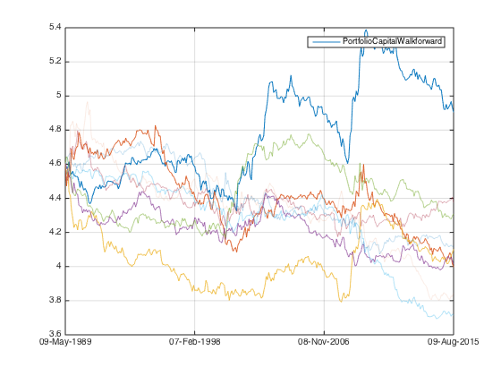

so if there is no positive drift on risk adjusted basis, then what's the point to include HML in the portfolio? as diversifier and a timing signal?